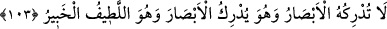
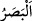

RU’YETULLAH
103. Gözler O’nu göremez; halbuki O, gözleri görür. O, eşyayı pek iyi bilen, her
şeyden haberdar olandır.
“Gözler O’nu kavrayamaz.” (  ), görme duyusudur. Göze de görme mahalli
olduğu için aynı isim verilebilir. Bir şeyi idrak etmek, ona ulaşmak ve onu kavramak
demektir. Buna göre mânâ: “Gözler O’na ulaşamaz ve O’nu idrâk edemez.” demektir.
“Ama O, gözleri kavrar.” Yani, Allah’ın ilmi gözleri kuşatır. “O, her şeyin
inceliklerini bilir, her şeyden haberdardır.” O, gözlerin idrak edemediğini de idrak
eder.
Allah’ın her şeyi idrak etmesine rağmen burada özellikle gözleri idrak ettiğinin
belirtilmesi, gözlerin kendi kendini göremediği içindir. Göz kendi kendisini idrak
edemediğine göre başkasını idrak etmesi hiç caiz değildir.
Burada mahlukatın gözleriyle görme duyusunun hakikatini idrak edemeyeceklerine
delil vardır. Basar (görme duyusu), insanın başka azalarıyla değil sadece iki gözünün
yardımıyla elde ettiği görme kabiliyetidir.
Bil ki idrak (kavramak), görmekten (rüyet) farklıdır. Çünkü, idrak bir şeyin künhüne
vâkıf olmak, onu kuşatmak ve kavramak; rü’yet ise bir şeyi görmekten ibarettir. Görmek,
idrak olmadan da olabilir. Mesela: “Onu gördü, ama idrak etmedi.” demek yanlış
olmaz. İdrak, görmekten daha husûsîdir. Daha husûsî olanın hükmünü kaldırmak, daha
genel olanın hükmünü kaldırmayı gerektirmez. Bu yüzden Allah’ın idrak ve ihâta
edilmeksizin görülmesi caizdir. Nitekim dünyada da Allah bilinir; fakat tam olarak
idrâk edilemez. Yani, mahlukatla irtibatı ve âlemin O’ndan neş’et etmesi îtibariyle
beşerin tâkati nisbetinde Allah Teâlâ’yı tanıması (marifet), mümkündür. Çünkü bu
bilgilerden, beşer tâkatinin yetmedikleri vardır. İşte bunlar, kâmillerin karşısında
hayrete düşüp gereği gibi tanımaktan (marifetten) âciz olduklarını îtiraf ettikleri ve “Biz,
seni gereği gibi tanıyamadık.”[147] dedikleri yerlerdir. İşte nisbetlerden ve izafetlerden
mücerred olması bakımından Allah’ın zatı idrak edilemez. Bu yüzden Nebi (a.s.)’a:
“Rabb’ini gördün mü?” diye sorulunca: “O, nurdur. O’nu nasıl görebilirim?”[148]
buyurmuştur. Yani “O, mücerred nurdur. Görülmesi mümkün değildir.” demektir.
Yine Hak Teâlâ Kitâbı’nda mazharların mertebelerinde nurunun zuhuruna işaret etmiş
ve “Allah, göklerin ve yerin nûrudur.” buyurmuştur. Âyetin devamında bunun misalini
zikrettikten sonra “Nur üstüne nurdur” buyurmuştur. Bu iki nurdan biri ışık, diğeri ise
mutlak aslî nûrdur. Bu yüzden Hak Teâlâ kelâmını “Allah nûruna dilediğini hidayet
eder.” (en-Nûr, 24/35) diye tamamlamıştır. Yani, “Allah, mazharlarda taayyün eden